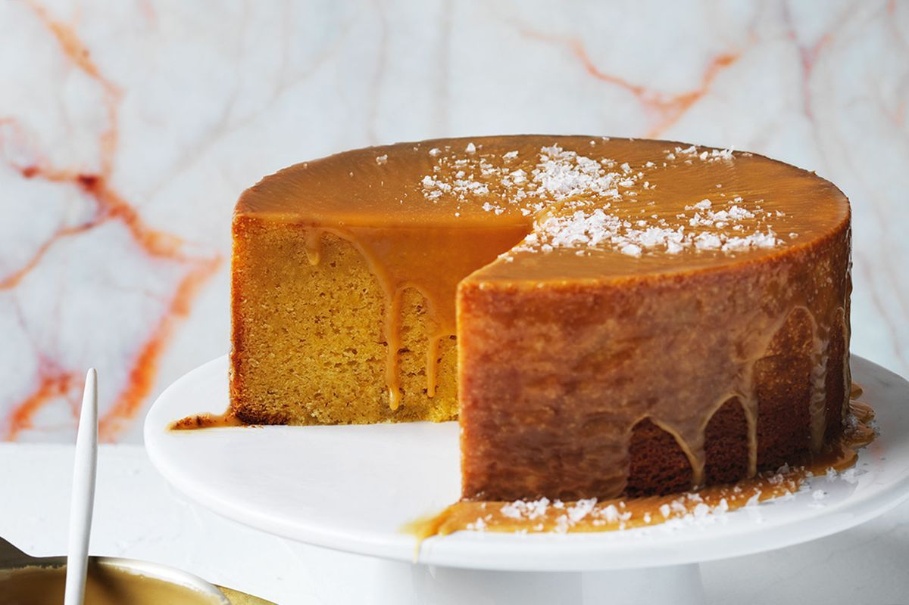

Melt-and-mix white chocolate and ginger mud cake

Description
Mudcake is solid residue from the drilling fluid, left when the liquid passes through a permeable medium.
Drown in the tasty delicacies of the white chocolate and ginger mud cake and give yourself the perfect winter snack for evenings.
Ingredients:
- 450g CADBURY Baking White Chocolate, chopped
- 300g unsalted butter, chopped, softened
- 500g sour cream (at room temperature)
- 1 1/3 cups (200g) self-raising flour, sifted
- 1 1/3 cups (200g) plain flour, sifted
- 3 tsp ground ginger, sifted
- 5 eggs (at room temperature), lightly beaten
- 300g caster sugar
- 160g caster sugar
- 200ml pure (thin) cream
- 200g CADBURY Baking White Chocolate, chopped
- Sea salt flakes, to serve
- Preheat oven to 160°C. Grease a 23cm round cake pan and line base and sides with 3 layers of baking paper, greasing between layers so they stick together (this stops the side of the cake colouring too much).
- Place chocolate and butter in a heatproof bowl over a saucepan of gently simmering water (don’t let the bowl touch the water) and stir until smooth. Cool for 10 minutes (the mixture might split, but will come back together with the other ingredients).
- Place remaining ingredients in a large bowl. Add cooled chocolate mixture and, using a large whisk or spatula, mix until smooth. Pour into prepared pan and bake for 1 hour until edges are set (centre will still be wobbly). Loosely cover with foil and bake for a further 1 hour 20 minutes or until a skewer inserted into the centre comes out clean with a few moist crumbs. Stand in pan for 30 minutes, then invert onto a wire rack to cool completely.
- For the glaze, place sugar and 2 tbs water in a small saucepan over medium heat. Cook, swirling pan, for 3-4 minutes until a golden caramel forms. Add 2 tbs warm water (caramel will seize, but will come back together when it simmers). Bring to a simmer, then gradually whisk in cream and bring to the boil. Place chocolate in a heatproof bowl and pour in hot caramel. Set aside for 2-3 minutes, then stir until melted and smooth. Cool slightly, then pour glaze over cake, letting it drip over the sides. Sprinkle with salt flakes to serve.
- Enjoy!